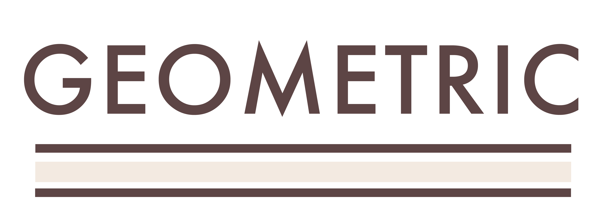

Typography
Consider Shape and Its Effect: Geometric vs. Organic

Typography is more than choosing a font that looks good. The shape of a typeface can change the personality of an entire design.

While organic typefaces have more variation and can feel handmade or playful, using shape intentionally can communicate a feeling before someone even reads the words.
More on ShapeWeight: Creating Visual Contrast
Weight is another way typography can create hierarchy and guide the viewer through a design. A bold or heavy typeface naturally draws more attention, while lighter weights can create a quieter visual presence.

Typography is the art and technique of arranging type.